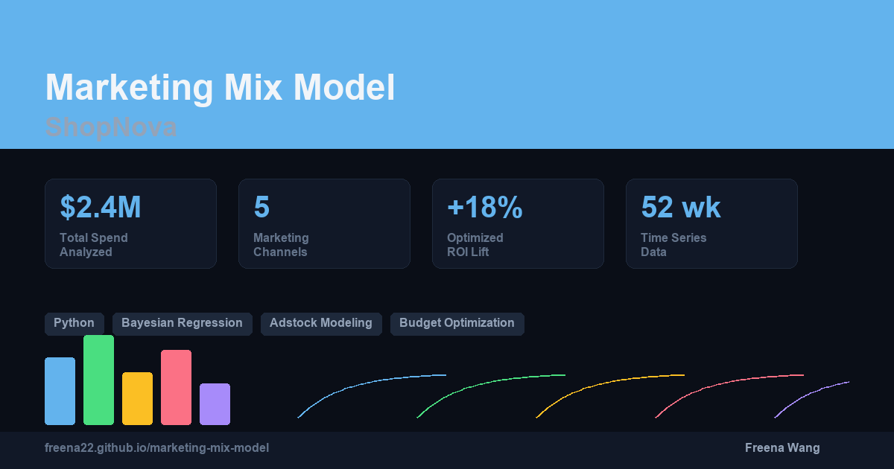
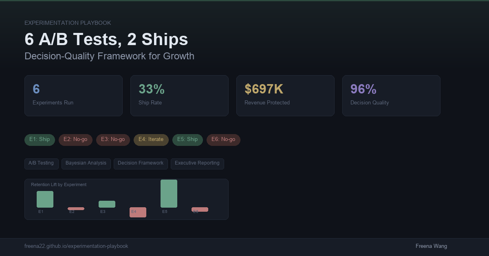
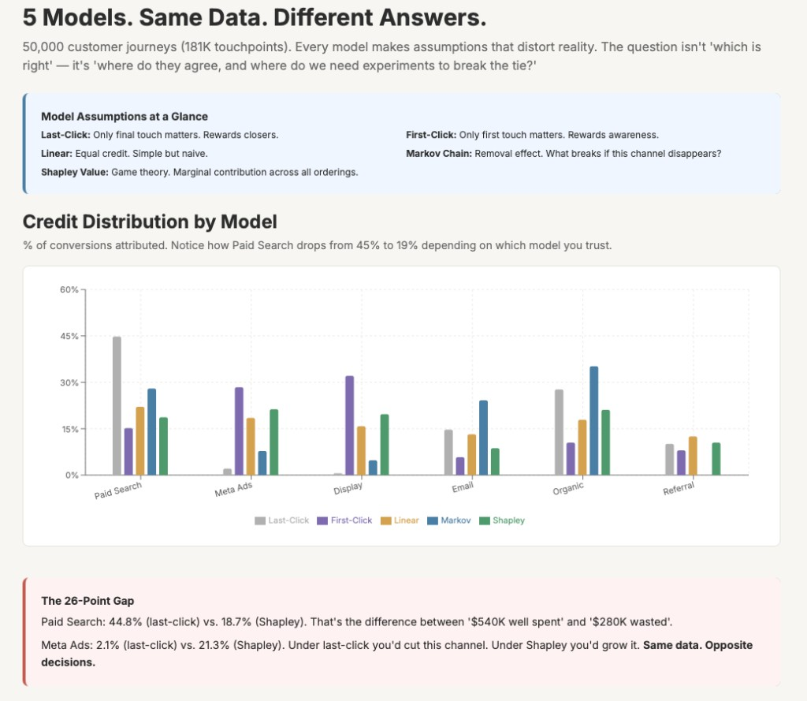

Portfolio
Growth & Marketing Analytics
Analytics professional with 7+ years of experience in growth measurement, experimentation, and causal inference. Specializing in marketing effectiveness, unit economics, and data-driven budget optimization. Expert in SQL, Python, and Tableau. Adept at translating complex data into actionable insights for stakeholders.
AI-Augmented Analysis
A complete marketing measurement system: where to spend (MMM), how to validate (Experimentation), what it's worth (Unit Economics), and what's actually working (Attribution & Incrementality).

Marketing Mix Model — ShopNova
End-to-end MMM analyzing $2.4M marketing spend across 5 channels. Built budget optimization simulator with diminishing returns modeling, delivering actionable reallocation recommendations.
Live

Experimentation Playbook — LinguaLeap
6 A/B tests, 2 ships: a full-cycle experimentation program with decision-quality framework, Bayesian & frequentist analysis, power sizing, and executive-ready reporting. Includes real Cookie Cats dataset deep dive.
Live

LTV / CAC Modeling — Orbit
Customer unit economics for a B2B SaaS platform: cohort retention analysis, LTV prediction by segment, CAC efficiency by channel, and data-driven budget reallocation recommendations.
Live

Attribution & Incrementality — NexaShop
Multi-touch attribution (Markov Chain, Shapley Value) and causal incrementality testing (DiD, Synthetic Control) for a D2C e-commerce brand's $5M marketing budget. Answers: which channels truly create value?
Live